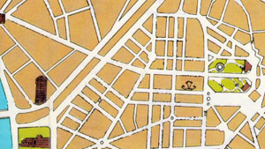

T
H
E
I
D
E
N
T
I
T
Y
G
A
M
E
|
A
map of a city can give a lot of information. . . if there are
names of places and streets on it. But if you look very careful
at some maps, you could notice a lot of differences between
cities even without the names. Ancient cities are mostly centred
around a central market. Many newer cities have parallel streets
and square shaped blocks of houses. So even without names, a map
could tell a lot about the city you're living in.
Try to
scan a map of the neighbourhood of your school, removing all
names and text, as well as any pictures of famous sites. Try it
on fellow students: can they still recognize your neighborhood
now? Make sure there's enough area visible to identify the
character of the city.
An
example from our mystery city:

|
|